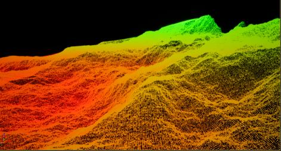
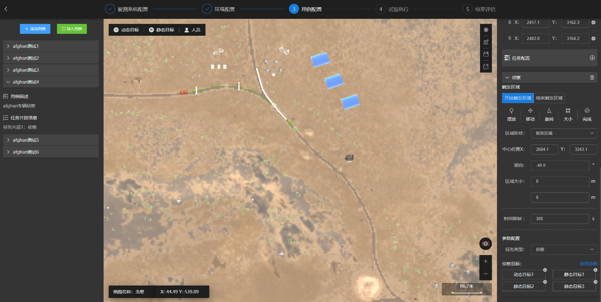

01
CARLA Extension & Python/C++ Interfaces
Extended CARLA in Unreal Engine 4 and built Python, C++ and Blueprint interfaces for simulation control, sensor configuration, scenario generation and data collection.
- Extended CARLA C++ client (LibCarla)
- Dozens of Python APIs via Boost.Python
- Vehicle control / simulated sensors
- Scenario generation & data collection
- API documentation & examples
- Interface testing & validation
- Linux / Docker deployment
Python API
↓
Boost.Python Binding
↓
C++ Client / LibCarla
↓
RPC
↓
Unreal Engine Simulation
Python → Boost.Python → C++ → RPC → Unreal call chain


